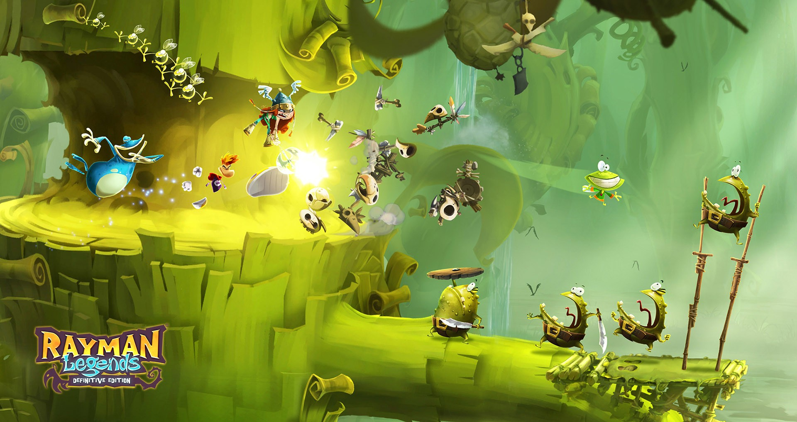

Nintendo Switch contará con 25,9 gigas de memoria disponibles
Normalmente, cuando las empresas hablan de la memoria de las consolas que lanzan al mercado, no suelen especificar la cantidad de
datos que consumirá el propio sistema operativo de la máquina u otros elementos que garantizan su correcto funcionamiento como las futuras
actualizaciones.
Ha sido el caso de Nintendo con su futura Switch. Cuenta con 32 gigas de memoria, pero no se sabía hasta ahora cuánto ocuparían los datos
reservados por la propia desarrolladora. Gracias a los vídeos e imágenes de HipHopTheRobot, hemos dado con la respuesta: 25,9 gigas.
Son pocos los videojuegos de Nintendo Switch de los que se tiene constancia de su tamaño, pero The Legend of Zelda: Breath of the Wild es
uno de ellos y ocupa más de 13 gigas, prácticamente la mitad de la memoria interna de la plataforma. ¿Hay motivo para temer por la capacidad
de la consola? En realidad no.
Nintendo Switch acepta tarjetas SD de más de 2 teras, por lo que los problemas de memoria no serán un problema en la nueva consola
de Nintendo si contamos con la tarjeta adecuada. Llega a las tiendas el próximo 3 de marzo a 329,99 euros.
Ubisoft confirma extras exclusivos para Rayman Legends en Switch
Michel Ancel, creador de Rayman y una de las mentes más creativas de Ubisoft en Francia, se ha sentado con Nintendo en su
canal de YouTube para hablar de su debut en la nueva Nintendo Switch: Rayman Legends: Definitive Edition. Sobre la consola ha
asegurado que "es el concepto de consola por el que tanto habíamos esperado: HD, potente y portátil", y ha destacado que Rayman le
sienta como anillo al dedo: "Rayman Legends es como un juego de mesa: poder jugarlo con tus amigos en una misma sala es perfecto, y
Switch se presta a ello".
Ancel cree que la relación entre Rayman y Nintendo es muy especial: "Es una especie de historia de amor entre Nintendo y Rayman.
El espíritu colorido de la serie va de la mano con Nintendo Switch". Rayman Legends: La Edición Definitiva llegará en una fecha por
determinar a lo largo del presente año 2017. Nintendo Switch llegará a las tiendas el 3 de marzo.

Así de bien luce el libro de arte sobre Zelda
La editorial Dark Horse Comics está preparando un vídeo sobre el arte de The Legend of Zelda: Art & Artifacts y, en esta ocasión,
han querido que esté de actualidad merced a la presentación de un tráiler sobre sus contenidos.
Con los 30 años de historia de la franquicia a sus espaldas, encontramos 427 páginas de contenidos en este libro con mucho
material completamente inédito que no había visto la luz hasta la fecha y que, por supuesto, trae consigo ilustraciones de The
Legend of Zelda: Breath of the Wild: la entrega que se estrena este mismo año.
Se puede adquirir tanto en formato digital como físico a partir del día 21 de febrero por un precio que ronda los 37 euros.
Zelda: Breath of the Wild está por fin terminado
Lejos de hacerla pública la propia Nintendo, la noticia la ha promocionado Monolith Soft, que les ha ayudado con algunos aspectos
relacionados con el elemento de libertad de su nueva aventura. The Legend of Zelda: Breath of the Wild está oficialmente terminado.
Lo han hecho a través de un Tweet, traducido por el portal Trusted Reviews, en el que anuncian que el juego ha alcanzado el estatus
Gold, lo que significa que ha completado todos los estadios de su desarrollo y que por fin es enviado a los fabricantes para su reproducción
en serie.
El título, que se lanza el 3 de marzo para Wii U y Nintendo Switch, es, probablemente, la cita más importante del mundillo de los
videojuegos para este primer semestre de 2017.